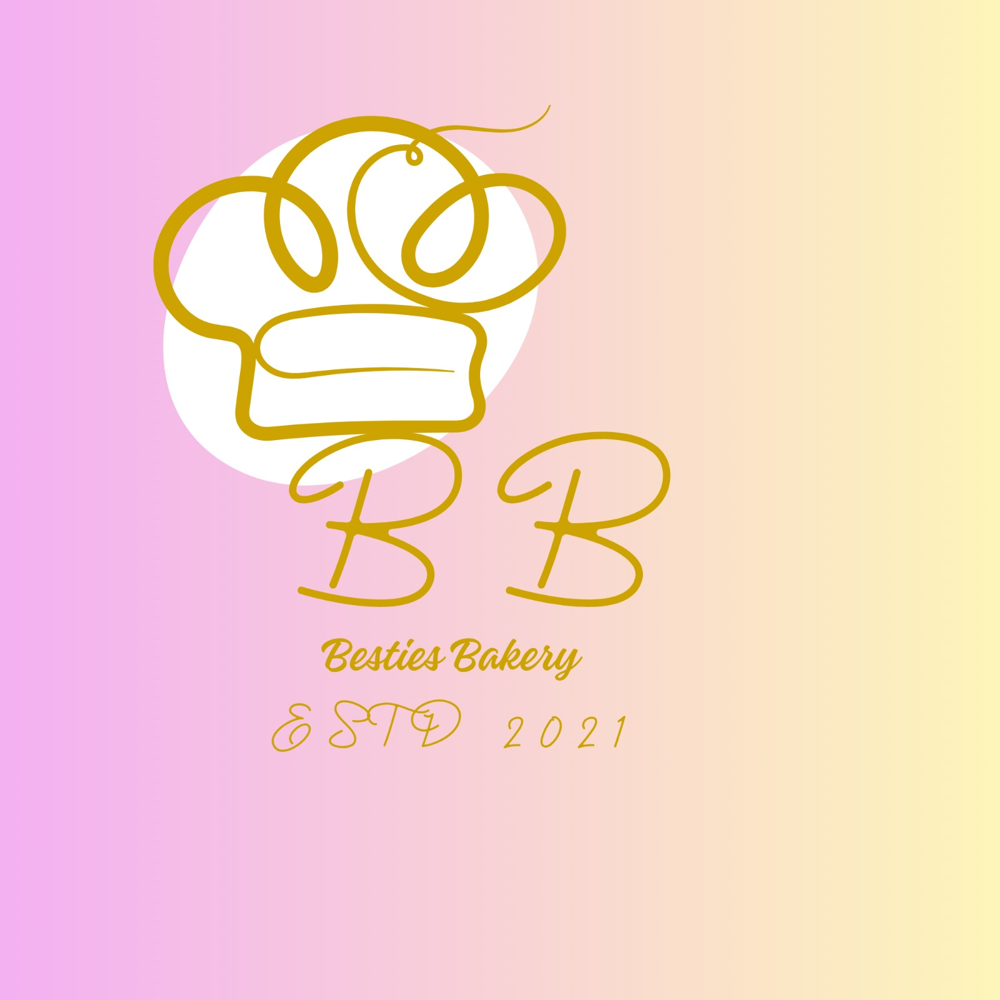
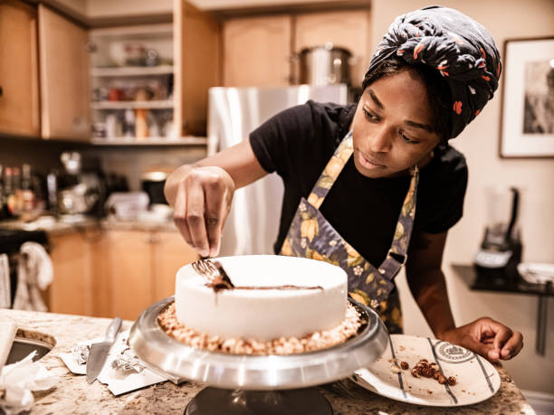
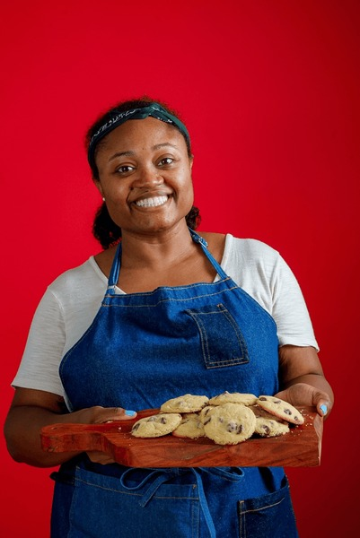

📖 Our story, our team, our passion
BestiesBakes was founded in 2018 by two best friends who shared a love for baking and community. What started as a small home kitchen has grown into a beloved local bakery in Sunnyside, Pretoria.
We believe that every celebration deserves something sweet. Our mission is to create joy through exceptional baked goods made with integrity using bring happiness through delicious, beautiful, and affordable treats. Every item is made from scratch using high-quality ingredients — no shortcuts, no preservatives.
Baking is love made visible
Founder & Head Baker
With over 15 years of professional baking experience, Banele has mastered the art of creating beautiful and delicious cakes.
Master Baker

Cake Designer & Decorator
Fine arts background turned into cake decorating. Specializes in fondant art and floral designs.
Award Winner

Assistant Baker & QC
Ensures every batch comes out perfect. Known for her gentle touch that makes pastries light and fluffy.
Quality Expert
Delivery & Customer Experience
Ensures every order arrives on time, beautifully packaged, with a personal touch.
Customer Favorite
Real butter, free-range eggs, no artificial flavors
Your cake arrives when promised, never late
Every message answered within 2 hours
Donate leftover treats to local shelters weekly